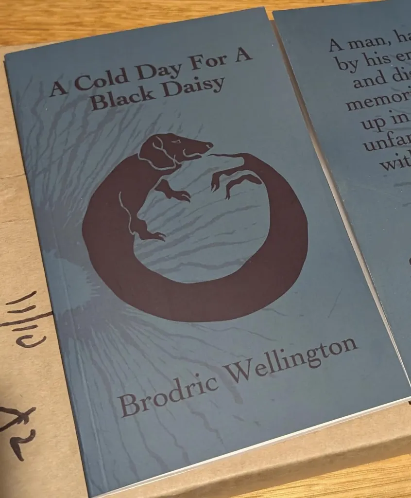

A Cold Day For A Black Daisy

A man cannot sleep. Rain pitter-patters on the tin roof, fog fills his thoughts, and the only company he keeps is a small black dog named Daisy. He is trying to hold his life together and failing in ways he cannot name. Memories will not stay where he puts them. Voices arrive from rooms he doesn't remember entering. A Cold Day for a Black Daisy follows a mind coming apart, and the loyal creature at its centre, asking what remains of a person when memory, identity, and love begin to dissolve.
COMING TO AMAZON SOON